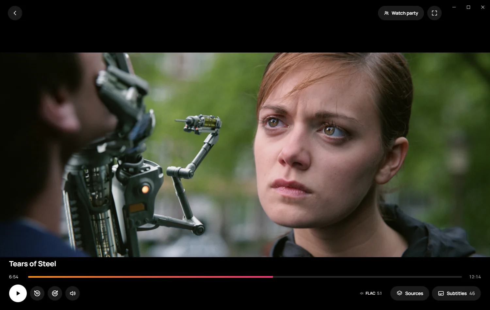

Everything you watch. On every screen.
Films, shows and live channels from the addons you choose, on your PC, your phone and your TV.


One app for all of it.
A clean, full-screen player, with sources and subtitles a click away.
Always-on channels, with something already playing when you sit down.
Start a party from the player and share the code. Everyone watches in step, on their own screen.
Save what you want to watch, and see new episodes of your shows on the day they air.
